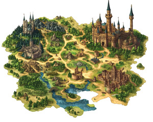

★ STRONG · Treatment A direction
Fantasy kingdom map
Adobe Stock #1248673531 · 4800×3840 · GenTech AI
Best composition reference. Top-down, all-landmarks-visible, river + forest + beach + buildings rendered as one cohesive painted scene rather than icons floating on flat ground. Style is more video-game-y than our painted-storybook target — Manus would brief towards Julia-Donaldson watercolour, not this — but the composition language is gold.